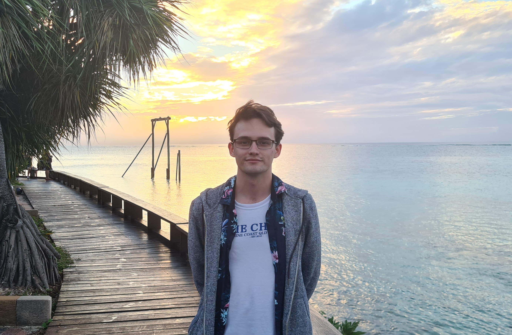

I am an Australian graduate student in mathematics, studying representation theory, geometry and machine learning.
My CV is here and my GitHub is here.
My advisors are Masoud Kamgarpour and Ole Warnaar.

My first paper is about Counting Points on Character Varieties.
My masters thesis is about the Arithmetic Geometry of Character Varieties.
I am working on a package to study character varieties in Julia.
I created a poster about the Topology of Representation Spaces via Arithmetic.
My undergraduate thesis was about Hecke Algebras and Gelfand Pairs in Representation Theory.
Co-organiser for the UQ SMP Graduate Student Seminar (2023-2024).
Co-organiser for a lecture series on the Weil conjectures (2023).
Marker for the Simon Marais Mathematics Competition (2022).
Marker for the UQ/QAMT Problem Solving Competition (2022).
Final exam marker for UQ (2021 - now).
Question drafter for the UQ SMP Maths Relay (2021 - 2023).
Tutor for the UQ Queensland Mathematics Summer School (2019).
President and vice president of the UQ Mathematics Students Society (2017 - 2019).
2024: MATH3303,
MATH1071 (lead tutor).
2023: MATH3303,
MATH1061 (lead tutor and lecture tutor).
2022: MATH3303,
MATH2401 (lead tutor),
MATH2301,
MATH2001.
2021: MATH3303,
MATH2401,
MATH2001,
MATH1061,
First Year Learning Centre.
2020: MATH2400,
MATH1071,
MATH1061,
MATH1051.
2019: MATH1061,
MATH1052,
MATH1051.
Character varieties (APAC Seminar, Aug 2024).
Polynomials in the variable p (AMSI Summer School, Jan 2024).
Character Varieties in Arbitrary Type (AustMS Conference, Dec 2023).
Arithmetic Geometry of Representation Spaces (Glasgow Algebra and Number Theory Seminar, Sep 2023).
Groups and Shadows (For MSS, Aug and Oct 2023).
Arithmetic, Geometry & Polynomials in the Variable q (Graduate Student Seminar, July 2023).
Counting Points on the Representation Variety (AustMS Conference, Dec 2022).
The Representation Variety and its E-Polynomial (AMSI Winter School, Jun 2022).
Hecke Algebras and Gelfand Pairs in Representation Theory (Honours Final Talk, May 2021).
Kinky Sets (For MSS, Mar 2021).
The Twin Prime and Elliot–Halberstam Conjectures (Coursework, Oct 2020).
The Dirichlet Function (For MSS, Mar 2019).
Geometry day @ UQ (Aug 2024).
AMSI Summer School 2024 (Jan -Feb 2024).
67th Annual Meeting of the Australian Mathematical Society (Dec 2023).
UQ School of Mathematics and Physics Poster Day (Oct 2023).
University of Glasgow Algebra and Number Theory Seminar (Sep 2023).
Categorified Enumerative Geometry and Representation Theory (Sep 2023).
Differential Geometry Days @ UQ (Feb - Mar 2023).
66th Annual Meeting of the Australian Mathematical Society (Dec 2022).
Number Theory Down Under 10 (Sep 2022).
AMSI Winter School 2022 - New Directions in Representation Theory (Jun -Jul 2022).
ANU Character Varieties, E-Polynomials and Representation Zeta Functions Workshop (Feb 2022).
UQ Maths North Stradbroke Island Workshop on Character Varieties (Dec 2021).
UQ Maths Heron Island Workshop on Geometry and Representation Theory (Jun - Jul 2021).
UQ Maths North Stradbroke Island Workshop (Feb - Mar 2021).
‘What is…?’ (Wise) Seminar (2021 - 2022).
AMSI Summer School 2021 (Jan - Feb 2021).
Simon Marais Mathematics Competition (2018 - 2019).
I play Tetris. You can find me
on TETR.IO.
I have a bad time
and a bad score in NES Tetris
(play with Mesen).
I played
Geoguessr 10 seconds no moving, panning or zooming.
I am a member of SSAA (2019 - now).
I am Centerfire Grade AA and Rimfire Grade A.
I am a member of Urban Climb (2021 - now).
67th Annual Meeting of the Australian Mathematical Society, Brisbane, Australia
[1]
University of Glasgow, Algebra and Number Theory Seminar, Glasgow, Scotland [1]
Categorified Enumerative Geometry and Representation Theory, Lausanne, Switzerland [1]
66th Annual Meeting of the Australian Mathematical Society, Sydney, Australia [1]
AMSI Winter School, Brisbane, Australia [1]
UQ Representation Theory Day, Brisbane, Australia [1]
Heron Island Workshop on Geometry and Representation Theory, Heron Island, Australia
[1]
{kind=link}
![[1]](files/23_austms.jpg){kind=link}
![[1]](files/23_Glasgow.png){kind=link}
![[1]](files/23_EPFL.png){kind=link}
![[1]](files/22_austms.jpg){kind=link}
![[1]](files/22_amsi.png){kind=link}
![[1]](files/21_repday.png){kind=link}
![[1]](files/21_heron.png){kind=link}